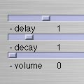
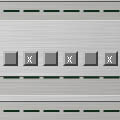

PolyMachine. version beta 0.1
|
||||||
Description
polyMachine is a polyrhythmic step sequencer where one can set the number of steps of each individual channel. The idea originated when trying to make a rhythmic software for indian talas, but then took a turn and became this little sequencer. The tala rhythm box will appear later : ) t
polyMachine has pitchcontrol, delay, individual tempo of each channel, individual settings of each channel, random choice of settings, volume, etc. Well, just try it.
polyMachine has up to 6 channels with countless steps. You set up your system when you start playing and then import the sounds you want to use. It comes with crappy demo sounds, so please replace them in the sounds folder (but remember to rename them with the same names as the ones in there already).